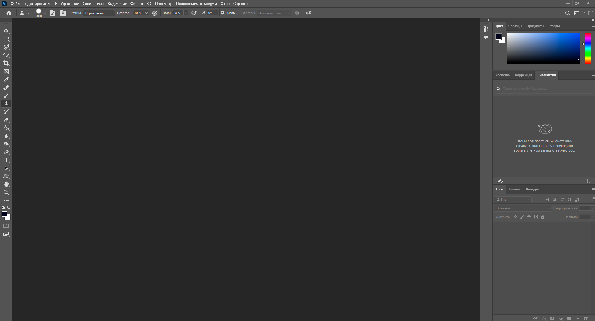
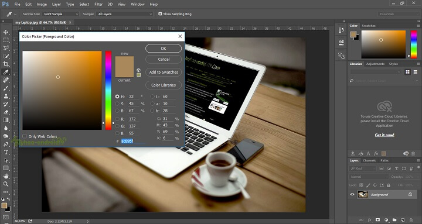
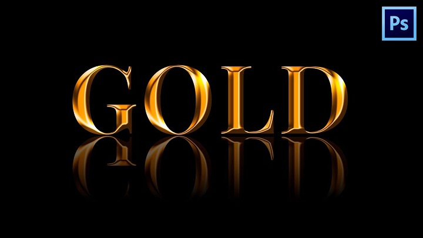

Графічний редактор Adobe Photoshop
Adobe Photoshop - це найпопулярніший багатофункціональний графічний редактор , призначений для роботи із зображеннями та відеофайлами. У ньому використовуються растрові зображення та кілька векторних інструментів.
Редактор дозволяє не тільки коригувати та ретушувати зображення, в ньому можна перетворювати малюнок або фотографію, використовувати шари та ефекти. Ці функції дозволяють легко змінювати та покращувати зображення, застосовувати різні фільтри для створення яскравої картинки.
Розробник – фірма Adobe Systems (США, Каліфорнія). Перша версія з'явилася 1990 року. Прототип програми вигадав студент Мічиганського університету Томас Нолл у 1987 році. Початкова назва - "Display". За рік компанія Adobe Systems купила її у студента.
В даний час існує понад 15 версій програми. Редактор постійно вдосконалюється.
Програма є платною. Розробник дозволяє легальне її використання лише за підпискою. Не можна купити її у постійне користування. Для професійної діяльності краще придбати ліцензію.
- Оперативна пам'ять: 8GB, 16GB рекомендується
- Відеокарта: 512MB, 2GB рекомендується
- Процесор: Intel Core 2 або AMD Athlon 64 з 2ГГц і вище
- Місця на диску: 3GB
- Операційна система: Windows
Системні вимоги
Для чого застосовується
Застосовується графічний редактор для особистих та комерційних цілей.
Adobe Photoshop знайомий практично кожному. Зараз це найпопулярніша програма, яку використовують у роботі професіонали: поліграфісти, дизайнери, мультиплікатори, фотографи, архітектори та інші творчі люди. Без неї неможливе створення комп'ютерних ігор. Вона активно використовується у промисловості реклами. За її допомогою створюються сайти. Виконуються завдання, пов'язані із цифровою графікою: обробка фотографій, моделювання, дизайнерські роботи. Останні версії дозволяють працювати із 3D-файлами.
Редактор активно використовують копірайтери, менеджери, маркетологи. Простота та зручний інтерфейс нових версій дозволяють освоїти редактор для особистих цілей: втілювати свої ідеї у презентаціях, робити ілюстрації для статей та постів у соціальних мережах, обробляти фотографії.
Можна самому створювати елементи дизайну: логотипи, кнопки, іконки, рекламні банери, візитні картки, вітальні листівки.
Інтерфейс
Для різних завдань Photoshop може виглядати по-різному. Його можна налаштувати для новачка та досвідченого дизайнера.
Що ми бачимо при першому запуску:
Розробники пропонують готові передустановки інтерфейсу для основних видів робіт: малювання, колір-тонова корекція, кольороподіл, WEB-дизайн, текстова верстка.
У той же час можна самому настроїти інтерфейс під себе.
Інтерфейс останньої версії Фотошопу став темнішим. Розробники пояснили це тим, що чорне тло дає можливість краще зосередитися на зображенні.
Меню налаштувань
Меню установок дозволяє швидко знайти потрібний інструмент чи команду. Для цього потрібно добре вивчити інструменти та швидко їх знаходити. Установки дозволяють увімкнути або вимкнути функції, змінювати режими роботи.
Рядок основного меню є списками, що випадають. У кожному є команди, об'єднані за певними ознаками. У рядку є доступ до всіх налаштувань та команд програми.
Їх використання дуже полегшує та прискорює роботу. Наприклад, пункт «Редагування» включає опції: «Крок назад», «Крок вперед», «Трансформування шару» і т.д. У пункті "Файл" знаходяться опції, що забезпечують взаємодію програми з комп'ютером: "Відкрити зображення", "Зберегти", "Експортувати", "Роздрукувати" і т.д.
Панель інструментів містить більшість інструментів, які згруповані на піктограми. Всередині піктограми розташовані різновиди цього інструменту. Наприклад, за допомогою основних інструментів, таких як Пензель (Paintbrush), Перо (Pen), Аерограф (Airbrush), Олівець (Pencil), можна малювати, а також розфарбовувати зображення.
Відображення та приховування допоміжних елементів
Допоміжні елементи (сітки, фрагменти, базові лінії тексту та ін) дозволяють виділяти, переміщувати або редагувати зображення та об'єкти. Їх можна відобразити або приховати на панелі інструментів. Це виконується за допомогою команди "Перегляд". Коли вони не потрібні, їх можна зробити невидимими. Це зручно під час роботи із зображеннями.
Зміна масштабу документів
У редакторі є чотири способи зміни масштабу. Усі вони досить прості. Найшвидший – за допомогою «Збільшувального скла», яке викликається з панелі інструментів. Можна також швидко повернутися до початкового масштабу.
Перемикання режимів екрану
Багато вікон, панелей, меню створюють при роботі безлад на екрані. Цю проблему розробник вирішив за допомогою різних режимів екрану. Режими керують усім кількістю інтерфейсу, що у роботі. Для цього створено три режими перемикання екрана: «Стандартний», «На екран з головним меню» і «На весь екран». Режими перемикаються гарячими клавішами.
Можливості редактора
Ліцензована версія Adobe Photoshop має велику кількість функцій для створення якісних зображень. Функціонал дуже вдалий.
Обробка фото
Будь-який користувач може покращувати якість відсканованих, надрукованих знімків, коригувати дефекти кольору.
Для передачі глибини кольору, роботи зі складною графікою є можливість створення багатошарового зображення, кожен із шарів можна редагувати окремо.
У редакторі можна монтувати фотографії та картинки, а також їх окремі елементи, створювати колажі.
Популярна робота з відновлення старих знімків, ретуш фотографій.
Редагування шарів
Роботу Photoshop можна порівняти зі створенням аплікацій, але замість шарів паперу в ньому використовуються віртуальні шари. Вони потрібні для копіювання, об'єднання та видалення шарів, а також для шар-масок. Робота з шарами дозволяє редагувати, пересувати окремі об'єкти зображення або щось в них змінювати, не боячись зачепити решту зображення.
Наявність шарів та функціоналу для роботи з ними вважають основною «фішкою» програми. Шарів можна створювати скільки завгодно. Кожному шару дається своя назва, і робота з ним дозволяє максимально природно передати глибину кольору та опрацювати деталі.
Шари поділяються на кілька типів. Основні з них:
- шар як окреме зображення чи його частина;
- шар із смарт-об'єктом;
- коригуючий шар;
- Текстовий шар.
Функцій, пов'язаних із шарами, у редакторі дуже багато. Можна налаштовувати прозорість шару, обрізати, змінювати яскравість, додавати різні маски, використовувати ефекти, тіні, візерунки, текстури, градієнти тощо.
Створення колажів
Колаж у редакторі є створення різних малюнків за допомогою накладання одного зображення на інше. В результаті виходять цілісні композиції. Це творча робота. Вона зазвичай починається з ідеї. Потім підбираються картинки, робиться ескіз.
За допомогою вигаданих образів можна реалізувати в редакторі будь-яку ідею. Колажі можна створювати кількома способами. Усі вони досить прості. Збираються за допомогою шарів, обробляються та об'єднуються у підсумкове зображення. Можна змінювати розмір зображень, переміщувати, повертати їх, щоб досягти необхідного результату. Колажі застосовуються у листівках, рекламних банерах тощо.
Робота з кресленнями
Для професійних креслень зазвичай використовують інші програми . Але Photoshop також має інструменти для такої роботи. Зазвичай креслення використовують у редакторі для подальшого моделювання. Для цього завантажується вже наявне креслення для подальшого редагування.
Креслення можна також виконати на основі наявної картинки або фотографії, які за допомогою набору інструментів можна перетворити на креслення. Можна зробити креслення із самого початку. Як правило, це не дуже складні проекти. Наприклад, можна зробити план кімнати.
Обробка тексту
Photoshop має дуже добрі інструменти для роботи з текстом.
Створений текст з'являється на власному шарі. Текст можна переміщати, трансформувати, змінювати його положення щодо інших шарів. За допомогою інструментів можна змінити стиль, кегль, колір, інтервал між рядками, вирівнювання і т.д.
Можна змінювати окремі літери в тому самому текстовому шарі. Дозволяється змінювати зміст тексту, застосовувати різні ефекти шару, змінювати рівень непрозорості. У роботі з текстом використовуються фільтри, текст можна заповнити градієнтом або малюнком. У програмі передбачено також перевірку правопису.
Перетворення чорно-білих зображень на кольорові
Це особливо актуально для старих фотографій. Кольорову фотографію перетворити на чорно-білу можна одним кліком. Отримання чорно-білої фотографії вимагатиме більше часу. Процес буде довшим, якщо на знімку багато дрібних деталей.
Кожна деталь розфарбовується окремо. Цю роботу можна порівняти з роботою художника, тому що кольори доведеться підбирати. Найчастіше для цього використовується інструмент «Пензель».
Обробка форм, текстур
Зазвичай цей спосіб застосовується, коли наявна форма зображення не влаштовує. Обробка текстури - дуже ефективний спосіб зробити звичайний знімок більш креативним. Текстура є важливим елементом у дизайні.
Текстури оточують нас усюди - дерево, бетон, тканини, скло, пластик. Текстуру на зображенні можна як змінити, а й створити свою. Зазвичай, дизайнери мають хорошу колекцію своїх текстур.
Редактор має можливість створювати власні текстури. Для цього використовуються фільтри, стилі шару та кисті.
Переваги та недоліки
Переваги
- просунутий функціонал для редагування зображень;
- налаштування інтерфейсу користувачем;
- можливість перекласти програму російською мовою;
- навчальні відео, курси, описи роботи, завдяки яким можна навчитися та розвинути свої навички роботи з редактором;
- безкоштовна версія на 30 діб дозволяє ухвалити рішення про купівлю редактора;
- розширення та плагіни для ще більшого збільшення доступних інструментів.
Недоліки
- не можна купити всю програму;
- передплата на програму коштує досить дорого;
- не на всі комп'ютери можна коректно встановити редактор через його великий обсяг;
- програма складна в освоєнні для користувача-початківця.
Висновок
Adobe Photoshop постійно вдосконалюється. В останніх версіях розробники все більше наділяють програму різними векторними інструментами. Завдяки зручному інтерфейсу користувача і багатим можливостям Photoshop залишається дуже популярним як серед професіоналів, так і серед любителів роботи із зображеннями.